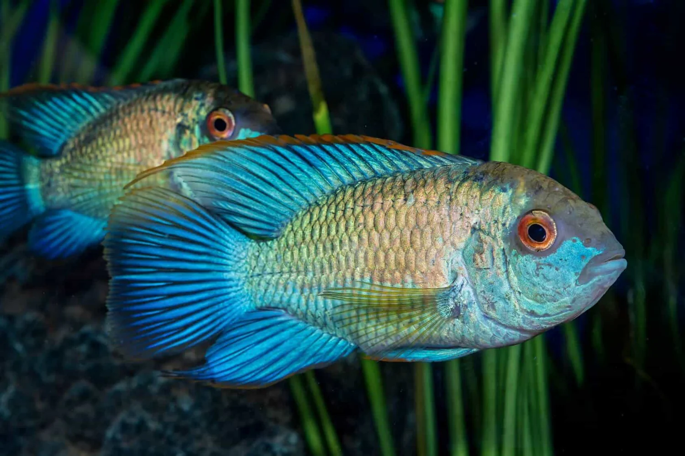

Electric Blue Acara
The Electric Blue Acara is a beautiful and peaceful cichlid that is perfect for community tanks.
More Information: They are relatively easy to care for and add a stunning blue hue to any aquarium. They thrive in planted tanks and enjoy a varied diet.